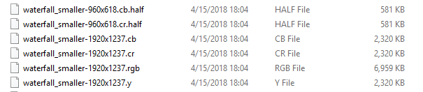

JPEG Encoding
3 types of borders in this presentation:
image
canvas
zoomable canvas
Colors
- Images are made of pixels
- Pixels are made of color components (r, g, b, a?)
- 1 byte per color (0-255)
- 3-4 bytes per pixel
Format comparison
original image: Seljalandsfoss, Suðurland, Islandia
{kind=link}

rgb
add some headers
output.bmp 1920 * 1237 * 3 bytes (6.959 MB)
rgb
some png magic
LZ77,
huffman coding
(similar to zlib)
output.png 1920 * 1237 (4.037 MB)
rgb
jpeg magic
output.jpg 1920 * 1237 (0.731 MB)
Lossy vs Lossless
Common formats on the web
- Lossless: png, svg
- Lossy: jpeg, gif
How do we figure out what data we can throw out and still have an image that looks good enough?
JPEG Compression - Colorspace Conversion
RGB YCbCr
Y (Luminance) how bright the pixel is
Cb blue component relative to green component
Cr red component relative to green component
RGB YCbCr
Y = 0.299 * R + 0.587 * G + .114 * B
Cb = 128 + -.169 * R + -.331 * G + .5 * B
Cr = 128 + .5 * R + -.419 * G + .081 * B
JPEG Compression - Colorspace Conversion
Human Eye
~90 million rods (Curcio, C. A.; Sloan, K. R.; et al. (1990). "Human photoreceptor topography". The Journal of Comparative Neurology. 292 (4): 497–523.)
~6 million cones (Osterberg, G. (1935). "Topography of the layer of rods and cones in the human retina". Acta Ophthalmol. Suppl. 13 (6): 1–102.)
Because our eyes are much more sensitive to changes in brightness, we can send the Y channel at full resolution and sub sample some of the color channels.
JPEG Compression - Color Subsampling
4:2:0 subsampling (half vertical and horizontal resolution)
